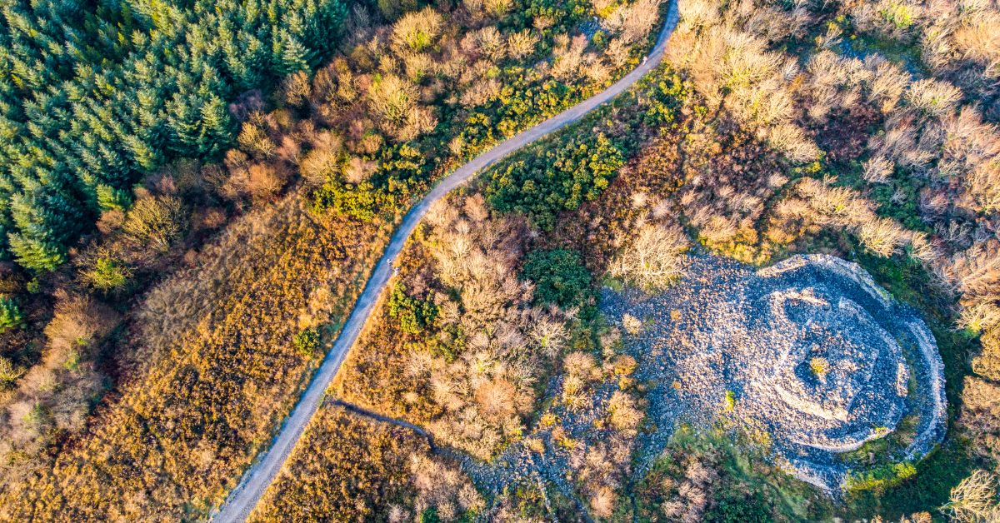
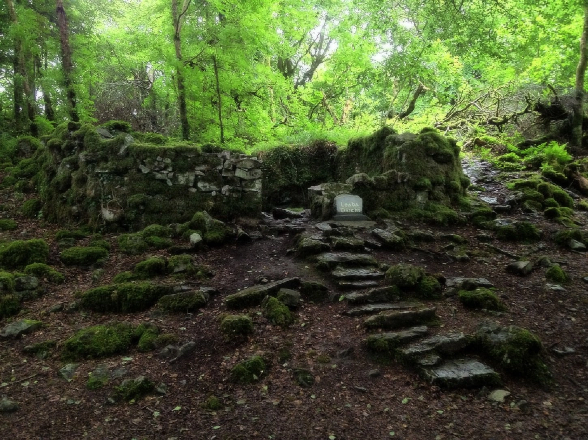
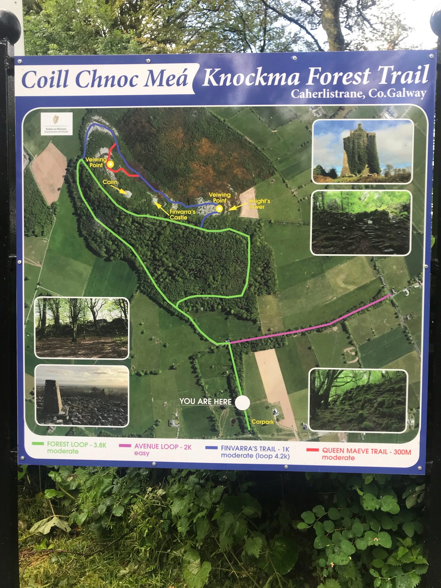
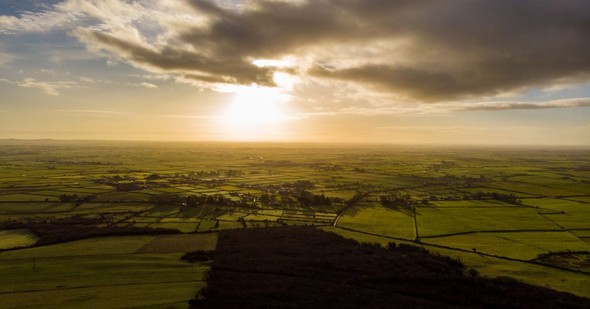
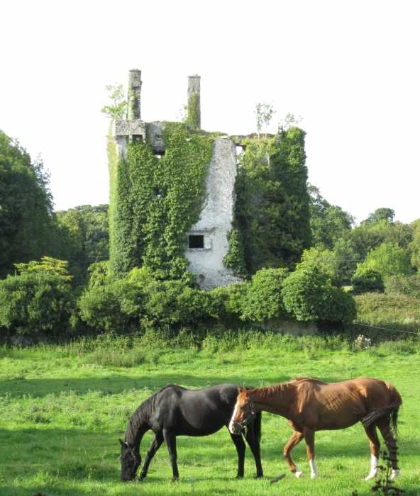
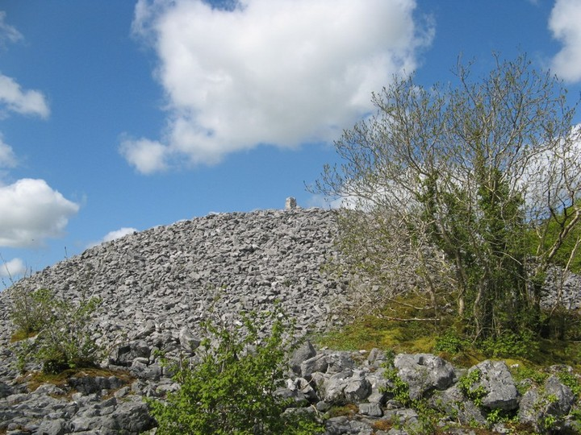

A bird's eye view of the top of the hill

Daithi Leaba (David's House), is a cottage ruin near the peak

A handy map detailing the route each trail takes

A vista of North Galway, as seen from the peak

All that remains of Kirwans castle, built back in the 1600's

This cairn is said to be the resting place of the old Queen of Connacht, Maeve